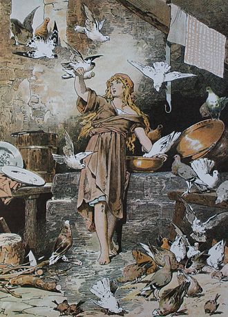

Cô bé lọ lem

Cô bé Lọ Lem hay Đôi giày thủy tinh (tiếng Anh: Cinderella, tiếng Pháp: Cendrillon, ou La petite Pantoufle de Verre, tiếng Ý: Cenerentola, tiếng Đức: Aschenputtel) là một câu chuyện dân gian thể hiện câu chuyện về sự áp bức bất công / phần thưởng chiến thắng. Hàng ngàn phiên bản biến thể của câu chuyện này đã được biết đến trên toàn thế giới.[1] Nhân vật chính là một cô gái trẻ sống trong hoàn cảnh không may đã được hoàng tử cưới làm vợ. Câu chuyện lần đầu tiên được xuất bản bởi Charles Perrault trong Histoires ou contes du temps passé năm 1697, với tựa đề "Cendrillon ou la Petite Pantoufle de verre" (Cô bé Lọ Lem hay chiếc giày thủy tinh nhỏ)[2] và cũng được kể lại trong Truyện cổ Grimm. Câu chuyện đã được Walt Disney Pictures chuyển thể thành phim hoạt hình phim cô bé Lọ Lem năm 1950.
Các phiên bản sớm nhất và sự khác nhau giữa các phiên bản ở từng quốc gia
Các khía cạnh của câu chuyện Cô bé Lọ Lem có lẽ có nguồn gốc từ cổ tích xa xưa. Nhà sử học Hy Lạp cổ đại Strabo (Geographica Sách 17, 1.33) ghi nhận lại trong danh sách là vào thời Hy Lạp-La Mã đã có truyện về một cô gái là Rhodopis, "cằm hồng", từng sống trong thời Thuộc địa Hy Lạp của Naucratis ở Ai Cập cổ đại. Và đây được cho là phiên bản cổ xưa nhất từng biết đến của câu chuyện:
Họ kể với tôi một câu chuyện tuyệt vời, rằng khi cô ấy đang tắm, một con đại bàng lấy cắp một chiếc dép của cô ta và đưa nó tới Memphis (Ai Cập). Khi nhà vua đang hít thở không khí trong lành, con đại bàng vừa nãy thả chiếc dép xuống khi đang bay trên đầu nhà vua. Đức Vua đã rất say mê vẻ đẹp của chiếc dép và ngay lập tức, một cách kỳ lạ, Đức Vua đã sai người đi tìm chủ nhân của chiếc dép. Khi cô gái chủ nhân chiếc dép được tìm thấy ở Naucratis, cô ấy đã được đưa đến Memphis và trở thành vợ vua...[3][4]
Herodotus, sống 5 thế kỷ trước Strabo, cho biết một thông tin nhiều hơn về Rhodopis trong lịch sử, nó viết rằng câu chuyện là về một cô gái tên Rhodopis đến từ thành phố Thrace, và là nô lệ của Iadmon và Samos, và bạn của Aesop. Cô được đưa vào Ai Cập trong thời gian trị vì của Pharaoh Amasis, và được trả tự do bằng một khoản tiền lớn bởi Charaxus của Mytilene, anh trai của Sappho, một nhà thơ trữ tình.[5][6]
Câu chuyện sau đó lại xuất hiện với Aelian (khoảng 175-ca. 235),[7] cho thấy rằng chủ đề Cô bé Lọ Lem đã được phổ biến trong suốt thời cổ đại.
Một phiên bản khác của câu chuyện là về Ye Tây An, xuất hiện trong mẩu chuyện khác từ Youyang bởi Duẩn Chengshi tầm năm 860. Ở đây, cô gái chăm chỉ và đáng yêu làm bạn với một con cá là hóa thân của mẹ cô, người đã bị giết bởi người mẹ kế và em gái của cô. Ye Xian tiết kiệm xương cá và nhờ ma thuật, nó đã giúp cô có quần áo đẹp cho lễ hội năm mới. Khi cô mất dép của mình sau khi được công nhận bởi gia đình hỗn cô, nhà vua thấy dép của cô gái và rơi vào tình yêu với cô ấy (cuối cùng cứu cô từ người mẹ kế độc ác của mình).
Một phiên bản khác của câu chuyện, đó là tương tự như phiên bản Trung Quốc, tồn tại ở Philippines. Những câu chuyện được gọi là "Mariang Alimango" (Mary). Người bệnh được điều trị bằng Maria giành được trái tim của hoàng tử trong lễ kỷ niệm sắp tới tuổi truởng thành của mình, và vượt qua sự tàn ác của người mẹ kế và người em kế độc ác. Trong phiên bản này, linh hồn của người mẹ quá cố của cô tái sanh trong hình hài một con cua, do đó danh hiệu, và phục vụ như cô "bà tiên đỡ đầu". Việc thử giày cũng xuất hiện, và nó có một sự tương đồng rất lớn với những câu chuyện Cô bé Lọ Lem của các nước Trung Đông.
Trong phiên bản tiếng Việt Tấm Cám, Tấm bị ngược đãi bởi cả người mẹ kế và em gái kế. Một lần mẹ kế sai 2 chị em đi bắt cá và hứa rằng ai bắt được nhiều cá hơn sẽ được tặng một dải yếm đào, đứa em đã lén lấy hết cá của Tấm. Con cá duy nhất còn lại với cô ấy cũng đã bị giết chết và ăn thịt, nhưng xương của nó là người bảo vệ và người giám hộ cho Tấm, cuối cùng giúp cô trở thành là cô dâu của nhà vua trong một lễ hội. Tuy nhiên, nhân vật chính biến thành nhân vật phản diện trong phần hai của câu chuyện, bằng cách đun sôi em gái mình còn sống và sau đó lừa người mẹ kế của mình, cho bà ta ăn thịt con gái riêng của mình.
Tại Thái Lan, phiên bản Lọ Lem này được gọi là Noọng Kảo và con cá vàng do tác giả Cheryl Hamada và Wilai Punpattanakul biên soạn, có những chi tiết tương tự Tấm Cám. Kảo là cô gái mồ côi mẹ từ nhỏ, lớn lên sống và làm bạn với con cá vàng gần bờ mương cạnh nhà. Chú cá vàng có nhiều phép thần kỳ,ban cho cô bé nhiều điều ước. Trái lại mẹ kế và cô chị độc ác, hòng ra tay hại chết Kảo. Con cá vàng chính là hồn người mẹ đã mất của cô, khi bà biến thành cá vàng, khi thì là quả cà tím và lúc là nhành cây. Tiếp đến là đoạn Noọng Kảo về giỗ cha cũng bị mẹ kế và cô chị xui trèo cây thốt nốt hái quả. Đang trèo thì mụ dì chặt gốc, nàng hỏi cũng trả lời là "dì đuổi ong vò vẽ cho con". Cây đổ, Kảo rơi xuống ao chết. Xác cô bị cá chạch rỉa hết chỉ còn quả tim hóa thành chim hoạ mi. Trong khi đó Phổn Kao (tên của cô chị) mặc quần áo của em gái mình dự hội ở cung điện với hoàng tử. Khi chim hoạ mi hót trong lồng, hoàng tử rút gươm hỏi: - "Có phải vợ ta thì đậu lên gươm". Chim sổ lồng, đậu luôn trên chuôi gươm. Một lần trong vườn ngự uyển, Phổn Kao dệt vải vô cùng nham nhở, chim hoạ mi kêu lên chửi Phổn Kao, ả ném cái thoi dệt khiến chim chết, quẳng vào lửa. Một bà già đi xin lửa thấy chim tưởng là than, bèn cầm về, vô tình đánh rơi vào chậu nước, chim lại hóa thành người. Nàng ở với bà cụ dệt vải. Một hôm chị gái của hoàng tử đi chơi qua gầm sàn, nàng bỗng đánh rơi thoi, thò tay xuống nhờ nhặt. Đứa bé gái là con gái nàng thấy cánh tay, nhận ra mẹ mình bèn về mách bố. Hai vợ chồng lại sum họp. Kết thúc truyện giống như Tấm Cám, Phổn Kao nghe lời em gái mình tắm nước sôi tới chết; Kảo sai người băm xác Phổn Kao ủ với mắm cho mẹ kế ăn và mụ đã chết khi bới hũ mắm có chứa đầu lâu con gái mình.
Ở truyện Con rùa của Miến Điện (Myanmar) thì người mẹ là một con rùa: Vợ chồng một người đánh cá có một cô gái đẹp tên là Bé. Một hôm hai vợ chồng đi đánh cá. Bắt được con cá nhỏ, vợ bảo để cho con ăn. Lại được con thứ hai, con thứ ba, vợ cũng nói như vậy. Chồng nổi giận đánh vợ một mái chèo. Vợ ngã xuống biển chết, sau đó hóa thành một con rùa lớn. Ít lâu sau, người đánh cá lấy vợ kế là một phù thủy, mụ có cô con gái xấu xí. Thấy Bé đẹp, mẹ con mụ ghen ghét ra sức hành hạ, nhưng người bố không quan tâm. Một hôm Bé ra bờ biển ngồi, bỗng con rùa nổi lên nhìn cô mà khóc. Bé đoán là mẹ, ôm chầm lấy rùa. Từ đó chiều chiều Bé ra biển thì rùa lại nổi lên. Mụ dì ghẻ biết chuyện, bèn giả ốm, lấy bánh đa bỏ dưới chiếu nằm lên, nói là xương bị gãy, lại đút tiền cho thầy lang, bảo thầy cứ nói ăn thịt rùa mới khỏi. Mụ bảo chồng theo Bé ra bờ biển, lúc rùa nổi lên thì bắt giết thịt. Bé không ăn thịt rùa nhưng lại nhặt xương rùa đem chôn, khấn xin một cây có quả vàng quả bạc. Cây mọc lên như lời. Một hôm vua đi qua thấy cây lạ, hỏi của ai. Mụ dì ghẻ nói là của con gái mình, nhưng khi con gái trèo lên thì không sao hái được. Láng giềng cho vua biết đó là cây của Bé. Bé đến ngồi dưới gốc khấn: - "Nếu cây này của ta thì quả rụng vào lòng ta". Quả vàng quả bạc liền rụng xuống. Vua bèn rước Bé về làm hoàng hậu. Mụ dì ghẻ viết thư xin lỗi Bé và mời Bé về thăm nhà. Về đến nhà, Bé dặn lính hầu tháng sau đến đón. Ở nhà được mấy ngày, một hôm mụ dì ghẻ giả vờ đánh rơi thìa trong bếp cho Bé cúi xuống nhặt rồi hắt nước sôi vào đầu. Bé chết, biến thành bồ câu trắng bay đi. Khi lính đến đón hoàng hậu thì con gái dì giả làm Bé. Thấy hoàng hậu mặt rỗ, vua hỏi, thì đáp liều là mới bị bệnh đậu mùa, hỏi tại sao bây giờ trán lại dô ra, đáp là vì đầu óc luôn nghĩ đến vua, hỏi tại sao mũi lại dài, đáp là vì nhớ vua, khóc nhiều, phải vuốt mũi luôn. Vua lại bảo thử dệt áo cho vua xem. Đang khi lúng túng vì không biết dệt thì bồ câu trắng (tức là Bé) thương chồng, dùng mỏ dệt thành áo đẹp. Nó chờ chim dệt xong, cướp lấy áo dâng vua, lại lấy thoi ném chết chim. Sai làm thịt đưa vua ăn. Vua thương bồ câu không nỡ ăn, những người hầu cũng không ăn, họ đem chôn. Hôm sau ở chỗ ấy mọc lên cây đu đủ. Có hai vợ chồng bà lão bán củi nghỉ dưới gốc, tự nhiên quả đu đủ rơi vào bọc bà lão, bà đưa về rấm, đợi chín xẻ ăn. Về sau một cô gái cũng từ quả đu đủ hiện ra, dọn nhà nấu cơm khi vợ chồng ông lão vắng mặt, rồi họ cũng giả vờ đi vắng, nhưng nửa đường bất chợt lộn về giữ lấy cô gái. Sau đó họ đưa cô gái - tức Bé - vào cung tâu bày với vua mọi việc của mẹ con mụ dì ghẻ. Hoàng hậu giả không nhận tội, xin vua mời thần linh phán xử theo tục lệ. Người ta trao cho bị cáo (hoàng hậu giả) một cây gươm sắt. Còn nguyên cáo (Bé) một cây gươm gỗ để đấu với nhau. Nhưng gươm sắt của hoàng hậu giả bỗng nhiên rơi xuống mềm nhũn, còn gươm gỗ của Bé lại biến thành gươm sắt bay ra chém đứt đầu đối phương. Đoạn cuối cùng giống truyện của ta: vua sai làm thịt hoàng hậu giả ướp muối đem biếu mụ dì ghẻ. Mụ cùng chồng ăn khen ngon. Bỗng mụ kêu lên: - "Đây là ngón tay, giống tay con ta!". Rồi lại kêu: - "Kia là ngón chân, giống chân con ta!". Nhìn vào hũ mắm thấy cái mặt rỗ, mụ thét: - "Đích là con ta!". Chồng cho là mụ nói nhảm đánh cho một trận.
Truyện dân gian của Lào cũng có nét tương đồng như truyện Noọng Kảo và con cá vàng của Thái Lan hay truyện con rùa của Miến Điện.
Có một phiên bản Hàn Quốc cũng vậy, có tên là "Kongjwi và Patjwi (콩쥐 팥쥐)". Nó là một câu chuyện về cô gái Kongjwi người đã liên tục bị ức hiếp bởi người mẹ kế và chị gái Patjwi. Gia đình bắt Kongjwi ở nhà trong khi họ tham dự lễ hội của nhà vua, nhưng đã có một nàng tiên (giống như trong phiên bản Lọ Lem của Perrault) và cho cô một trang phục đẹp hơn mọi người. Các motif là như nhau, liên quan đến một vị vua cũng rơi vào tình yêu với cô ấy. Nhưng một số chi tiết nhỏ đã thay đổi bởi vì câu chuyện hư cấu này đang diễn ra tại Hàn Quốc. Bao gồm các chi tiết của dép và các lễ hội thông thường xảy ra trong các câu chuyện Cô bé Lọ Lem.
Còn ở Nhật Bản, phiên bản này có tên là Chujo-hime (中将姫). Cô được cho là con gái của một bộ trưởng hoàng tộc của gia tộc Fujiwara và một công chúa hoàng gia. Những câu chuyện khác nhau không đồng ý về ngày tháng năm sinh của cô: hầu hết diễn ra vào thế kỷ thứ 8, trong triều đại của Hoàng đế Shōmu, và đề nghị cô là con gái của Fujiwara no Toyonari; tuy nhiên, một vài tiểu bang cô là con gái của Fujiwara no Toyoshige, một thế kỷ trước đó. Người ta nói rằng các cặp vợ chồng không có con đã kêu gọi Kannon và được cấp một con gái để đổi lấy cuộc đời của một phụ huynh. Khi Chūjō-hime là ba, do đó, mẹ cô qua đời; cha cô sau đó tái hôn.
Trong Series Quảng cáo Hy vọng & Niềm vui từ Rejoice của hãng Dầu gội Rejoice năm 2007, Marie Joyce (Tấm) là cô gái từ nông thôn lên thành phố lập nghiệp. Cô có 2 người chị kế và người chị kế cả của Joyce rất hung dữ và kiêu ngạo, trong khi người chị kế thứ thì hết lòng thương yêu Joyce. Chị kế cả luôn coi thường Joyce và sẵn sàng chê bai cô ấy. Trong một bữa tiệc, chị kế của Joyce đã giấu hoa tai vào bụi cây và bắt cô ấy tìm cho được hoa tai ấy. Sau khi Joyce tìm ra được hoa tai, chị kế vô cùng ghen tức vì tóc của Joyce rất mượt và không bị rối. Lần khác, khi Joyce đang quay video để thử giọng hát, chị kế lại dùng máy sấy tóc khổng lồ để phá hoại Joyce. Tuy nhiên, Joyce được một ông bầu ngoại quốc ưu ái bởi cô ấy xinh và hát hay. Kết thúc Series, Joyce được tuyển để thử giọng và làm ca sĩ chính thức cho một hãng đĩa nhạc ở nước ngoài
Trong một số phiên bản của câu chuyện, mẹ kế của cô sau đó ra lệnh cho cô bị đưa vào núi và bị bỏ rơi để chết. Ở những người khác, cô vẫn ở nhà và làm bản sao của kinh điển Phật giáo cho sự cứu rỗi của mẹ cô, và lòng sùng kính này kiếm được sự thù hận của mẹ kế. Trong cả hai trường hợp, cô được các nữ tu Phật giáo của Taima-dera giải cứu và trở thành một nữ tu. Là một nữ tu, cô sống một cuộc sống khổ hạnh và thiền định, và được biết đến như một "Phật sống". Cô được cho là đã phát minh ra nghệ thuật thêu trong thời gian này.
Một số biến thể khác nhau của câu chuyện xuất hiện trong thời trung cổ Nghìn lẻ một đêm, còn được gọi là Đêm Ả Rập, trong đó có "The Second Câu chuyện Shaykh của", "Câu chuyện The Lady Eldest" và "Abdallah ibn Fadil và anh em của ông", tất cả liên quan với chủ đề của một người em gái bị ức hiếp bởi hai người ghen tức với cô. Trong một số trong số này, các anh chị em là phụ nữ, trong khi ở những người khác, họ là nam giới. Một trong những câu chuyện, "Judar và Hỡi các anh em của ông", khởi hành từ kết thúc có hậu của phiên bản trước đó và làm lại các âm mưu để cho nó một kết thúc bi thảm thay vào đó, với những em trai bị đầu độc bởi anh em trai của mình.[8]
Các biến thể của Cô bé Lọ Lem có thể được bắt nguồn từ những câu chuyện của Cordelia trong Historia Regum Britanniae Monmouth của Gèoffroy. Cordelia là người trẻ nhất và đạo đức nhất trong ba cô con gái người Anh của vua Leir, tuy nhiên đức hạnh của cô không làm cho cô được cha mình yêu thương khi ông chia vương quốc cho 2 người chị lớn còn Cordelia không được gì. Cordelia kết hôn với tình yêu của mình, Aginippus, vua của người Frank, và chạy trốn đến Gaul nơi cô và chồng cô lập quân đội và hạ bệ 2 người chị độc ác- những người đã lợi dụng vị vua cha. Cordelia cuối cùng cũng đã đăng quang Nữ hoàng của người Anh. Tuy nhiên ngự trị của cô chỉ kéo dài năm năm. Câu chuyện được kể lại trong nổi tiếng của Shakespeare "Vua Lear", nhưng với một kết thúc bi thảm.
Các phiên bản Lọ Lem khác nhau
Một trong những phiên bản nổi tiếng nhất về cô bé Lọ Lem được viết bởi Charles Perrault năm 1697. Câu chuyện của ông phổ biến do các tình tiết hấp dẫn mà ông thêm vào, bao gồm chiếc xe ngựa bí ngô, bà tiên đỡ đầu và đặc biệt là đôi hài thủy tinh.[9]
Một phiên bản khác cũng được biết đến rộng rãi được ghi lại bởi anh em người Đức Jacob và Wilhelm Grimm vào thế kỷ 19. Câu chuyện mang tên "Aschenputtel" ("Cinderella" trong tiếng Anh) và sự giúp đỡ không phải đến từ bà tiên đỡ đầu mà là cây điều ước mọc ở trên mộ của mẹ cô.
1.Phiên bản Nàng Cenerentola
Ngày xửa ngày xưa, có một vị công tước chằng may goá vợ, ông có một người con gái tên là Zezolla (hình ảnh của Lọ Lem), do thiếu thốn tình cảm của mẹ, cô rất vui khi được sự quan tâm và yêu thương của cô giáo. Với sự giúp đỡ của Zezolla, cô thuyết phục cha mình cưới cô giáo. Đáng buồn thay, cô giáo có sáu người con gái, với tính tình hợm hĩnh của mình họ thường xuyên đối xử tệ bác với Zezolla, họ đuổi cô xuống bếp và bắt cô phải làm việc như một đứa đầy tớ. Vị công tước trong một lần đi đến hòn đảo Sardinia, ông đã gặp một bà tiên. Bà tặng cho ông một món quà cho cô con gái của ông. Món quà gồm có một cái thuổng bằng vàng, một cái xô vàng, một chiếc khăn lụa, một hạt giống. Cô lấy hạt giống đó và đem gieo trồng. Năm đó, nhà vua mở vũ hội, tất cả các cô gái trong vương quốc đều được tham gia. Zezolla xuất hiện trong một bộ váy vô cùng lộng lẫy do cái cây thần mà cô chăm sóc tặng. Nhà vua đem lòng yêu cô ngay từ cái nhìn đầu tiên, nhưng Zezolla đã bỏ chạy trước khi ngài kịp biết cô là ai. Tương tự, lần thứ hai Zezolla cũng chạy thoát khỏi nhà vua và người hầu của ngài. Ở lần thứ ba, người hầu của nhà vua tìm được một chiếc hài mà cô đánh rơi. Nhà vua mời tất cả các thiếu nữ trong vương quốc đến để thử hài, cuối cùng Zezolla cũng mang vừa chiếc hài mà nhà vua tìm được, ngài cưới Zezolla làm vợ.[10]
2.Phiên bản Nàng Aschenputtel
Ngày xửa ngày xưa, có một người đàn ông giàu có chẳng may vợ ông bệnh nặng. Nằm trên giường bệnh của mình, bà gọi cô con gái duy nhất của mình đến bên cạnh mình và dặn dò cô bé rằng hãy sống thật tốt bụng và trung thực, rồi trời phật sẽ bảo vệ cô. Nói xong mẹ cô bé qua đời và được đem đi chôn cất. Một năm trôi qua, người đàn ông góa vợ kết hôn với một phụ nữ khác, bà này có hai cô con gái riêng. Họ có gương mặt đẹp và làn da trắng, nhưng trái tim của họ lại tàn nhẫn và độc ác. Hai người chị em mới lấy hết quần áo và đồ trang sức đẹp của cô bé và bắt cô phải mặc quần áo rách rưới. Họ đuổi cô vào nhà bếp để làm các công việc tồi tệ nhất, và đặt cho cô biệt danh "Aschenputtel" ("xỉ than"). Mặc dù vậy, cô bé vẫn sống tốt với mọi người và khiêm nhường, thỉnh thoảng cô đi đến mộ mẹ mà khóc và cầu nguyện rằng ước gì mình có một cuộc sống hạnh phúc hơn.
Một ngày nọ, người đàn ông giàu có nọ đi đến một hội chợ, ông nói với các cô con gái của mình rằng sẽ tặng cho mỗi cô một món quà sang trọng. Người chị lớn muốn có trang phục đẹp, người chị kế thích ngọc trai và kim cương. Con gái ruột của ông chỉ yêu cầu ông tặng cô cành cây đầu tiên gõ vào chiếc mũ của ông trên đường đi. Người đàn ông đã đi đến hội chợ, và mua các món quà đắt giá cho các cô con gái của vợ. Khi đi qua một khu rừng, mũ của ông chạm vào một cành hạt dẻ, ông hái nó và đưa nó cho con gái của mình. Cô trồng cành cây trên mộ mẹ, tưới nước nó cùng với những giọt nước mắt của cô. Cành cây dần lớn lên thành một cây hạt dẻ. Cô bé đến bên cây và cầu nguyện hằng ngày, và mỗi lần như vậy một con chim trắng luôn luôn bay đến an ủi cô.
Tại vương quốc đó, nhà vua tổ chức lễ hội trong ba ngày ba đêm, và mời tất cả các thiếu nữ xinh đẹp trong đất nước tham dự để kén vợ cho hoàng tử. Gia đình họ được mới, hai chị em đều háo hức đi, Aschenputtel cũng muốn đi nhưng mẹ kế từ chối vì cô không có trang phục đẹp, cũng không có giày để mặc. Người mẹ kế đã ném một đĩa đậu lăng vào đống tro tàn và bắt cô phải lựa ra. May thay nhờ sự giúp đỡ của hai chú chim bồ câu trắng được gửi bởi mẹ cô từ thiên đường, cô đã nhặt xong trong vòng chưa đầy một giờ trắng được gửi bởi mẹ cô từ thiên đường. Mẹ kế thấy vậy rất bực tức, bà ném thật nhiều đậu lăng và bắt cô phải nhặt hết. Nhưng Aschenputtel vẫn hoàn thành công việc thậm chí còn nhanh hơn. Không muốn làm lỡ dịp may hiếm có của hai cô con riêng của mình, mẹ kế thúc dục hai người con và bỏ mặc Aschenputtel khóc một mình.
Tại vương quốc đó, nhà vua tổ chức lễ hội trong ba ngày ba đêm, và mời tất cả các thiếu nữ xinh đẹp trong đất nước tham dự để kén vợ cho hoàng tử. Gia đình họ được mới, hai chị em đều háo hức đi, Aschenputtel cũng muốn đi nhưng mẹ kế từ chối vì cô không có trang phục đẹp, cũng không có giày để mặc. Người mẹ kế đã ném một đĩa đậu lăng vào đống tro tàn và bắt cô phải lựa ra. May thay nhờ sự giúp đỡ của hai chú chim bồ câu trắng được gửi bởi mẹ cô từ thiên đường, cô đã nhặt xong trong vòng chưa đầy một giờ trắng được gửi bởi mẹ cô từ thiên đường. Mẹ kế thấy vậy rất bực tức, bà ném thật nhiều đậu lăng và bắt cô phải nhặt hết. Nhưng Aschenputtel vẫn hoàn thành công việc thậm chí còn nhanh hơn. Không muốn làm lỡ dịp may hiếm có của hai cô con riêng của mình, mẹ kế thúc dục hai người con và bỏ mặc Aschenputtel khóc một mình.
Sáng hôm sau, hoàng tử đến nhà Aschenputtel và thử dép trên các chị gái lớn tuổi nhất. Các chị em đã được tư vấn bởi mẹ cô để cắt đứt ngón chân của mình để phù hợp với dép. Khi đi với chị gái, hai chim bồ câu từ trời nói với Hoàng tử rằng máu nhỏ giọt từ chân của mình. Kinh hoàng trước sự phản bội của mình, ông trở lại một lần nữa và thử dép trên chị gái khác. Cô cắt bỏ một phần của gót chân của mình để có được chân của mình trong dép, và một lần nữa hoàng tử bị lừa gạt. Khi đi cùng cô ấy đến lâu đài của vua, chim bồ câu cảnh báo anh ta một lần nữa về máu trên chân cô. Ông đã trở lại để hỏi về một cô gái khác. Người đàn ông nói với ông rằng họ giữ một nhà bếp, người giúp việc trong nhà - bỏ qua đề cập đến là cô con gái của mình - và hoàng tử yêu cầu ông cho cô ấy thử trên dép. Các cô gái xuất hiện sau khi rửa chính mình, và khi cô đưa vào dép, hoàng tử nhận ra cô ấy là người lạ với người mà ông đã nhảy vào bóng.
Cuối cùng, trong đám cưới Aschenputtel, như cô đang đi bộ xuống các lối đi với chị em mới của mình như là phù dâu của mình, (họ đã hy vọng sâu cách của họ vào lợi của mình), chim bồ câu từ trời bay xuống và đánh mắt hai chị em mới ", một ở bên trái và một ở bên phải. Khi đám cưới đã kết thúc, và Aschenputtel và hoàng tử của mình bước ra khỏi nhà thờ, chim bồ câu bay một lần nữa, đập vào mắt còn lại của hai chị em xấu mù, một sự trừng phạt họ phải chịu đựng cho phần còn lại của cuộc sống của họ.
Mối quan hệ Aschenputtel với cha của mình trong phiên bản này là không rõ ràng; phiên bản của Perrault nói rằng người cha vắng mặt chủ yếu là người vợ thứ hai của mình, giải thích tại sao ông không ngăn chặn việc lạm dụng con gái mình. Tuy nhiên, người cha trong câu chuyện này đóng một vai trò tích cực trong một vài cảnh, và nó không phải là giải thích lý do tại sao anh chịu đựng sự ngược đãi của con mình. Ông cũng mô tả Aschenputtel như "con người vợ đầu tiên của" của mình và không phải của riêng của mình.
3.Phiên bản Nàng Lọ Lem của Perrault
Ngày xửa ngày xưa, có một người đàn ông chẳng may vợ mất sớm, ông tái hôn với một người phụ nữa hết sức kiêu căng và ngạo mạn. Bà ta có hai đứa con gái, và cả hai cũng đều kiêu kỳ, ích kỉ như mẹ của mình. Ông có một người con gái với người vợ trước, cô bé vừa đẹp người lại vừa đẹp nết, luôn đối xử tốt với tất cả mọi người. Một hôm, người đàn ông đó phải đi công tác xa. Trước khi đi, ông hỏi ba cô con gái rằng chúng muốn ông mua quà gì không. Cô em kế thứ nhất thì muốn một chiếc dù thêu ren duyên dáng còn cô em kế thứ hai thì muốn một mảnh vải thật là đẹp. Riêng cô bé tốt bụng kia thì chỉ muốn một cành cây đầu tiên mà ông chạm phải trên hành trình của mình. Chẳng may người đàn ông ốm nặng và qua đời, chỉ kịp đưa cho gia nhân một cành liễu. Khi biết tin bố mình mất, hai cô em kế vô cùng thờ ơ, thậm chí còn thất vọng vì không có quà. Còn cô bé vô cùng buồn bã. Cô liền đem cành liễu đến mộ của mẹ mình để trồng. Theo thời gian, cây liễu dần dần lớn lên, mỗi khi có chuyện buồn hay ấm ức, cô liền chạy đến bên gốc cây mà khóc.
Khi đó, số nợ của ngôi nhà ngày một nhiều. Người phụ nữ kia đành đuổi hết người làm đi, để cho cô bé khốn khổ phải hầu hạ và phục tùng họ như người ở, họ bắt cô làm việc cả ngày lẫn đêm, hết việc này tới việc khác, không lúc nào ngơi tay. Và khi đêm đến, cô phải ngủ trong một góc nhà cạnh lò sưởi. Vì lúc nào cũng ngủ gần lò sưởi và làm việc vất vả nên cô thường xuyên lấm lem, người dính đầy nhọ, hai người chị kế lấy đó mà gọi cô bằng cái tên hết sức chế giễu "Cinderella" (Lọ Lem). Lọ Lem nhẫn nại chịu đựng vì không muốn rời xa ngôi nhà của cha mẹ cô để lại, nơi lưu giữ tuổi thơ hạnh phúc của cô.
Một ngày nọ, hoàng tử mời tất cả các thiếu nữ trong vương quốc đến dự buổi vũ hội, với mục đính sẽ chọn ra được người vợ tương lai trong số các thiếu nữ tham dự. Hai cô em kế vui vẻ sửa soạn váy áo đi dự vũ hội, họ cũng không quên chế giễu Lọ Lem rằng người hầu thì không được cho vào vũ hội đâu.
Nhìn hai người em mình đi chơi hội, Lọ Lem khóc nức nở. Bỗng nhiên, bà tiên đỡ đầu xuất hiện như có phép lạ. Bà biến quả bí ngô thành một cỗ xe ngựa kéo mạ vàng, các chú chuột nhắt ở góc nhà thành bốn con tuấn mã, một con vịt thành người đánh xe, và chú thạch sùng thành người hầu. Tiếp đến, bà biến bộ quần áo rách rưới của Lọ Lem thành một bộ váy dạ hội lộng lẫy với trang sức lấp lánh, và cuối cùng bà cũng không quên tặng cô một đôi hài bằng thủy tinh. Bà tiên đỡ đầu nói rằng cô hãy tận hưởng buỗi vũ hội, và không quên dặn cô rằng phải trở về trước khi chuông đồng hồ đổ mười hai tiếng, khi đó mọi phép màu sẽ biến mất.
Tại buổi vũ hội, mọi người đều choáng ngợp với vẻ đẹp lộng lẫy của Lọ Lem. Hoàng tử cũng không phải ngoại lệ. Gần như điệu nhảy nào Hoàng tử cũng mời Lọ Lem nhảy. Và ở lần này, Lọ Lem đã nhớ và về trước khi nửa đêm đến. Khi về nhà, cô rất vui và cảm kích trước sự giúp đỡ của bà tiên đỡ đầu. Một lúc sau, hai người em kế của Lọ Lem mới về, và họ không hề nhận ra cô chính là cô gái xinh đẹp mà họ thấy ở vũ hội.
Buổi vũ hội thứ hai diễn ra vào ngày hôm sau, Lọ Lem vẫn được tham dự với sự giúp đỡ của bà tiên. Hoàng tử bắt đầu say mê cô và không thể rời mắt khỏi Lọ Lem, Lọ Lem cũng dần say mê chàng và quên cả thời gian, và cô chỉ nhận ra khi nửa đêm đã đến. Cô vội vã rời khỏi cung điện và vô tình đánh rời một chiếc hài thủy tinh trên bậc thềm. Hoàng tử cố hết sức đuổi theo cô, nhưng đến khi đã ra khỏi cung điện, binh lính chỉ thấy một cô gái nông dân tầm thường quần áo rách rưới. Hoàng tử nhặt chiếc hài thủy tinh mà cô bỏ lại ở cung điện. Chàng tự hứa với mình sẽ tìm cho bằng được và kết hôn với cô gái là chủ nhân của chiếc hài thủy tinh này. Và kỳ lạ thay, Lọ lem vẫn giữ chiếc hài thủy tinh còn lại, mặc dù mọi thứ khác được tạo ra từ phép thuật của bà tiên đỡ đầu điều biến mất.
Hoàng tử cho tất cả phụ nữ trong vương quốc đi thử chiếc hài. Khi chàng đến nhà Lọ Lem, hai cô chị cố gắng nhét chân vào chiếc giày nhưng không thể nhét vừa. Khi Lọ Lem tỏ ý muốn đi thử, hai cô em ra sức chế giễu, nhưng chiếc hài lại vừa như in. Lọ Lem liền đưa chiếc còn lại ra làm chứng. Lúc này, hai cô em mới ăn năn hối lỗi, van xin Lọ Lem tha thứ cho những hành động độc ác trước đây của mình. Mặc dù cô đã tha thứ cho mẹ kế và hai em của mình, nhưng họ đã bị cấm đặt chân vào đất nước một lần nữa.
Bài học đầu tiên của câu chuyện là " Tốt gỗ hơn tốt nước sơn. " - sắc đẹp rất quan trọng nhưng vẻ đẹp tâm hồn mới là vô giá.[11]
Tuy nhiên, bài học thứ hai của câu chuyện lại đối nghịch hoàn toàn với bài học thứ nhất, thể hiện cái nhìn châm biếm của Perrault: "Một bài học khác: Có trí thông minh, lòng can đảm, dòng tộc danh giá và kinh nghiệm sống cũng giúp ích rất nhiều. Những điều này, và nhiều điều khác chỉ đến từ thiên đàng. Nhưng ngay cả chúng cũng có thể không đem lại thành công cho bạn nếu không được một ông tiên hay bà tiên phù hộ."[11]